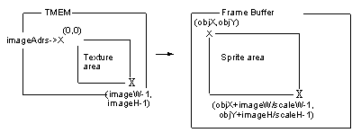
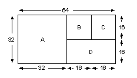
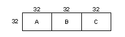
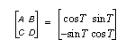
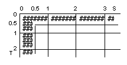
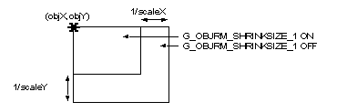

|
|
Sprite Microcode
S3DEX Overview
The Drawing Primitive
The following functions can be used from the old graphics binary interface (GBI).
The following functions can not be used from the old GBI.
There are few similarities between S2DEX and old Sprite2D Microcode. S2DEX is not an upgrade to Sprite2D, but it is rather a new microcode. Also, sprite libraries such as spInit() can not be used in combination with S2DEX because sprite libraries use 3D microcode. The S2DEX library is completely different from the sprite library.
Self Loading Function
Note: Use of S2DEX to draw 3D primitives by loading F3DEX microcode requires Release Version 1.22 and later versions of F3DEX Microcode, and N64 OS/Library Version 2.0I or later.
DEBUG Information Output Function
These functions are fully described later in this chapter.
Passing Commands from RSP to RDP
Note: On some of the on-line "Functional Reference Manual" (HTML) pages, the minimum FIFO size in _fifo microcode commands is stated to be 0(100 bytes. This is incorrect. The FIFO size required varies depending on the microcode command. These are as noted above for the F3DEX series and S2DEX, while 0(180 bytes are necessary for Fast3D.
Compatibility with F3DEX
Also, to use the GBI of S2DEX, you need to include the header file <PR/gs2dex.h>. Insert this include specification after the include specification of <ultra64.h>.
Next, let's compare the GBI of S2DEX and the GBI of F3DEX. Simply put, you can consider that S2DEX does not support GBIs which deal with 3D primitives, 4x4 matrices, and light definition.
The following refers to gSP* and gDP* only, but the same applies to gsSP* and gsDP*.
GBIs Supported by Both S2DEX and F3DEX
Note: For S2DEX, the number of segments when using gSPSegment is 16 and the number of DL links when using gSPDisplayList is 18 (same as F3DEX).
GBIs Not Supported in S2DEX
New GBIs
Changing Mode Using OtherMode
In addition, combining the g[s]DSPSetOtherMode command with a g*SPSetOtherMode-type command when changing modes resulted in a malfunction with F3DEX. (Normal setting by g*SPSetOtherMode could not be accomplished) This has been corrected in S2DEX so that they can be combined.
S2DEX GBIs
BG Drawing GBI
uObjBg Structure
The S2DEX microcode has been developed to use Super NES-like sprite and BG functions on the Nintendo 64 (N64). Due to these functions, it is easier to create a game using sprites. Also, by treating drawing objects as sprites and BG, N64 programming is similar to the conventional sprite game programming.
Since S2DEX is designed specifically for processing 2D expressions, 3D primitive drawing for Fast3D and F3DEX is not supported. However, the following primitives can be drawn using S2DEX Microcode.
Size is fixed. Texture flipping (vertical / horizontal) and drawing in the copy mode is possible. Scale change (magnifying / shrinking) and rotation are not possible Texture interpolation display and subpixel movement are not possible. Antialiasing processing is not possible. The texture must be loaded to TMEM before drawing.
Texture flipping is possible (vertical / horizontal). Drawing in 1, 2 cycle mode is possible. Texture interpolation display and subpixel movement are possible. AntiAlias processing is possible. Scale change (magnifying / shrinking) is possible, but rotation can not be done. Texture must always be loaded to TMEM.
Scale change (magnifying / shrinking) and rotation are possible. Texture flipping is possible (vertical / horizontal). Texture interpolation display and subpixel movement are possible. AntiAlias processing is possible. Drawing in copy mode is not possible. Texture must always be loaded to TMEM.
Scrolling in closed region (vertical / horizontal loop) is possible. Horizontal texture flipping is possible (not vertical texture flipping). Drawing is possible in copy mode only. Scale change (magnifying / shrinking) is not possible. Texture interpolation display and subpixel movement are not possible. AntiAlias processing is not possible. Drawing is done by loading the texture on DRAM to TMEM as necessary.
A CPU-based emulation routine is available. Scale change (magnifying / shrinking) is possible. Scrolling in closed region (vertical / horizontal loop) is possible. Horizontal texture flipping is possible (not vertical texture flipping). Drawing can be performed in 1 cycle mode only. Texture interpolation display is possible. Subpixel movement is possible in the horizontal direction only. AntiAlias processing is not possible. Drawing is done by loading the texture on DRAM to TMEM as necessary.
As mentioned above, S2DEX is not capable of drawing 3D primitives. However, S2DEX has a microcode self loading function which is supported by F3DEX (Release 1.20 or later). Therefore, it is possible for S2DEX to draw 3D primitives by loading F3DEX microcode.
There are two types of S2DEX Microcode. One is installed for master ROM, and the other is for debugging. The Microcode for debugging is equipped with the following features.
S2DEX only supports fifo versions (same as F3DEX series).
However, a larger FIFO buffer is required by S2DEX than for F3DEX. While this buffer had to be 0(300 bytes or larger for the F3DEX series, it has to be at least 0(800 bytes for S2DEX. Please be aware that If you want the FIFO buffer to be shared by the F3DEX series and S2DEX, it must be at least 0(800 bytes to fulfill the S2DEX requirements.
The GBI of S2DEX was derived from F3DEX. So, there is no compatibility with the GBI of Fast3D. When you use S2DEX, you need to define F3DEX_GBI like F3DEX before ultra64.h is included.
The following GBIs are fully supported by both S2DEX and F3DEX, except as noted.
DL Process Control:
gSPDisplayList(*)
gSPEndDisplayListgSPBranchList
Setting Up Segment:
gSPSegment(*)
Loading Microcode:
gSPLoadUcode*
Scissoring:
gDPSetScissor gDPSetScissorFrac
Setting RDP Mode:
gSPSetOtherMode
gDPSetTexturePersp
gDPSetTextureLOD
gDPSetTextureFilter
gDPSetCombineKey
gDPSetAlphaDither
gDPSetAlphaCompare
gDPSetRenderMode
gDPSetDepthImage
gDPSetCombineModegDPSetCycleType
gDPSetTextureDetailg
gDPSetTextureLUT
gDPSetTextureConvert
gDPSetColorDither
gDPSetBlendMask
gDPSetDepthSource
gDPSetColorImage
gDPSetTextureImage
Setting Color Value, etc.:
gDPSetEnvColor
gDPSetFogColor
gDPSetPrimColor
gDPSetConvert
gDPSetKeyGBgDPSetBlendColor
gDPSetFillColor
gDPSetPrimDepth
gDPSetKeyR
Loading to TMEM:
gDPSetTileSize
gDPSetTile
gDPLoadMultiBlock*
gDPLoadMultiTile*
gDPLoadTLUT_pal256 gDPLoadTile
gDPLoadTextureBlock*
gDPLoadTextureTile*
gDPLoadTLUT_pal16
Primitives:
gDPFillRectangle
gSPTextureRectangle
gsSPTextureRectangleFlip gDPScisFillRectangle
gSPScisTextureRectangle
Sync Processing:
gDPFullSync
gDPPipeSync gDPTileSync
gDPLoadSync
NOOP:
gSPNoOp
gDPNoOpTag gDPNoOp
The following GBIs are not supported by S2DEX.
Setting View:
gSPViewport
gSPPerspNormalizegSPClipRatio
Matrix Operation:
gSPMatrix
gSPInsertMatrixgSPPopMatrix
gSPForceMatrix
Vertex Operation:
gSPVertex
gSPModifyVertex
Conditional Branch:
gSPCullDisplayList
gSPBranchLessZ*
Polygon Type Setting:
gSPSetGeometryMode
gSPTexturegSPClearGeometryMode
gSPTextureL
Primitives:
gSP1Triangle
gSP1Quadrangle
gSPLineW3DgSP2Triangles
gSPLine3D
Lighting:
gSPNumLights
gSPLightColor
gSPLookAt*
gDPSetHilite2TilegSPLight
gSPSetLights[0-7]
gDPSetHilite1Tile
Fog:
gSPFogFactor
gSPFogPosition
For Old Sprite2D Use:
gSPSprite2DBase
gSPSprite2DDrawgSPSprite2DScaleFlip
The following GBIs have been added to S2DEX.
BG Drawing:
gSPBgRectCopy
gSPBgRect1Cyc
Sprite Drawing:
gSPObjRectangle
gSPObjSprite gSPObjRectangleR
2D Matrix Operation:
gSPObjMatrix
gSPObjSubMatrix
Drawing Mode Setting:
gSPObjRenderMode
Load Texture Processing:
gSPObjLoadTxtr
Compound Commands:
gSPObjLoadTxRect
gSPObjLoadTxSpritegSPObjLoadTxRectR
Conditional Branch:
gSPSelectDL
gSPSelectBranchDL
When changing the mode in F3DEX with g[s]SPSetOtherMode, no more than 31 bits could be set with a single g[s]SPSetOtherMode command. This has been restructured in S2DEX so that you can change 32 bits worth of parameters at once with a single command.
Following are detailed descriptions of the GBIs available in S2DEX.
S2DEX can easily create vertical and horizontal scroll surfaces in a closed area (this function was included in the Super NES). Developing scroll games such as 2D Mario will be easier using this feature.
uObjBg structures hold the drawing information of BG. The pointer to this structure is given as the BG drawing GBI parameter.
uObjBg structures can be precisely divided into 3 common structures. The first is for aligning the structure with the 8 byte boundary and does not require attention. The remaining 2 have data structures which adapt for the two BG drawing GBI structures described below.
The structure that adapts for the BG drawing GBI resulting from the Copy Mode is uObjBg_t and the structure that adapts for the BG drawing GBI resulting from the 1 Cycle Mode is uOBjScaleBg_t.
typedef union {
uObjBg_t b;
uObjScaleBg_t s;
long long int force_structure_alignment;
} uObjBg;
uObjBg_t Structure
Members of the uObjBg_t structure can be divided into two groups (first half and second half).
The first half consists of the member variables to be set by the user. BG drawing can be controlled by changing these variables. This first half can be shared with the uObjScaleBg_t structure.
The second half consists of the variables to be calculated and stored by the CPU to help the Microcode. These member variables are set by calling the function guS2DInitBg(), using the uObjBg structure's pointer as the parameter. However, there is no need to call guS2DInitBg every time.
Since the second half's member variables can be derived from the first half variables (imageLoad, imageFmt, imageSiz, imageW, and frameW), guS2DInitBg needs to be called only immediately after these variables are changed.
Using uObjBg as BG plane, these variables don't normally change very often. Therefore, it is usually sufficient to call guS2DInitBg once before using BG plane.
However, when the uObjScaleBg_t structure's member variables scaleW, scaleH, imagYorig have changed the uObjBg_t second half's member variables may be changed. In this situation, it will probably be necessary to call guS2DInitBg again.
Following is the definition section of uObjBg in gs2dex.h. uObjBg's size is 40 bytes; and uObjBg must be aligned to 8 bytes.
The first half member variables will be explained in the GBI section. Please understand that the arrangement of member variables is somewhat complicated to optimize RSP operation.
Note: In S2DEX Version 1.00 and later, the format of member variables imagePal and imageFlip has changed from u8 to u16.
typedef struct {
u16 imageX; // The x-coordinate of the upper-left position of BG image (u10.5)
u16 imageW; // The width of BG image(u10.2)
s16 frameX; // The upper-left position of the transfer frame(s10.2)
u16 frameW; // The width of the transfer frame (u10.2)
u16 imageY; // The y-coordinate of the upper-left position of BG image (u10.5)
u16 imageH; // The height of BG image (u10.2)
s16 frameY; // The upper-left position of the transfer frame (s10.2)
u16 frameH; // The height of the transfer frame (u10.2)
u64 *imagePtr; // The texture address of the upper-left position of BG image
u16 imageLoad; // Which to use, LoadBlock and LoadTile
u8 imageFmt; // The format of BG image G_IM_FMT_*
u8 imageSiz; // The size of BG image G_IM_SIZ_*
u16 imagePal; // The pallet number
u16 imageFlip; // Image horizontal flip. Flip using G_BG_FLAG_FLIPS.
// All of the above are common with uObjScaleBg_t
// The user doesn't have to set the following since they are
// set within the initialization routine, guS2DInitBG().
u16 tmemW; // The width of TMEM for 1 line's worth of the frame.
// The width is the Word size.
// At LoadBlock, GS_PIX2TMEM(imageW/4,imageSiz)
// At LoadTile, GS_PIX2TMEM(frameW/4,imageSiz)+1
u16 tmemH; // The width of loadable TMEM at a time. (s13.2)
// The height is 4 times value
// At the normal texture, 512/tmemW*4
// At the CI texture, 256/tmemW*4
u16 tmemLoadSH; // The SH value
// At LoadBlock, tmemSize/2-1
// At LoadTile, tmemW*16-1
u16 tmemLoadTH; // The TH value or the Stride value
// At LoadBlock, GS_CALC_DXT(tmemW)
// At LoadTile, tmemH-1
u16 tmemSizeW; // The skip value of imagePtr for 1 line's worth of the image.
// At LoadBlock, tmemW*2
// At LoadTile, GS_PIX2TMEM(imageW/4,imageSiz)*2
u16 tmemSize; // The skip value of imagePtr for one loading.
// = tmemSizeW*tmemH
} uObjBg_t; // 40 bytes
The following structure defines the initialization function guS2DInitBg.
| Void | guS2DInitBg(uObjBg *bg); |
This function is used for initializing the uObjBg structure (uObjBg_t). If the uObjBg data structure is used as the parameter without initialization, the S2DEX Microcode's GBI may not function properly.
Parameter: bg The pointer to the uObjBg structure.
uObjScaleBg_t Structure
There is no member argument required to calculate the value by the CPU in advance like uObjBg_t in members of the uObjScaleBg_t structure. All member arguments are directly set by the user, and BG plane drawing is then controlled accordingly.
In addition, when shared by the uObjBg structure, the uObjScaleBg_t structure's member variables from imageX to imageFlip are shared with the uObjBg_t structure.
typedef struct {
u16 imageX; // The x-coordinate of the upper-left position of BG image (u10.5)
u16 imageW; // The width of BG image (u10.2)
s16 frameX; // The upper-left position of the transfer frame (s10.2)
u16 frameW; // The width of the transfer frame (u10.2)
u16 imageY; // The y-coordinate of the upper-left position of BG image (u10.5)
u16 imageH; // The height of BG image (u10.2)
s16 frameY; // The upper-left position of the transfer frame (s10.2)
u16 frameH; // The height of the transfer frame (u10.2)
u64 *imagePtr; // The texture address of the upper-left position of BG image
u16 imageLoad; // Which to use, LoadBlock and LoadTile
u8 imageFmt; // The format of BG image G_IM_FMT_*
u8 imageSiz; // The size of BG image G_IM_SIZ_*
u16 imagePal; // The pallet number
u16 imageFlip; // Image horizontal flip. Flipped using G_BG_FLAG_FLIPS.
// All of the above are common with uObjBg_t
u16 scaleW; // The scale value of the x-direction (u5.10)
u16 scaleH; // The scale value of the y-direction (u5.10)
s32 imageYorig; // The drawing start-point on image (s20.5)
u8 padding[4];
} uObjScaleBg_t; // 40 bytes
| Gfx | *gdl; | The display list pointer. |
| uObjBg | *bg; | The pointer to the
drawing data structure of BG |
g[s]SPBgRectCopy is the simplest BG drawing GBIs supplied by S2DEX. This GBI has the following features.
Designed for drawing in the copy mode, the biggest advantage of g[s]SPBgRectCopy is that it has the fastest drawing speed. When using the GBI, CycleType must be set to the Copy mode.
S2DEX sends data from the BG image buffer to the actual frame buffer's rectangle region, shown below. Scrolling becomes possible by establishing the relationship between the upper left hand corner of the frame buffer rectangle region (transfer frame) and a point in the BG image buffer, specified by imageX and imageY. imageX, imageY can be specified in the (u10.5) format, but due to restrictions when using the Copy mode, the values for imageX, imageY are limited to integer values.
 |
The size of the BG image is set by imageW and imageH. The beginning address (the top left hand corner) is specified by imagePtr. That is, you can consider the BG image to be a large texture data having width (imageW) and height (imageH) starting from imagePtr.
BG image's width, imageW must be aligned to 8 bytes. Since the actual values used for imageW and imageH are in (u10.2) format, the values to be assigned must be multiplied by 4. The following chart shows the imageW's value constraints, taking (u10.2) format into consideration and multiplying by 4. There is no need to align imageH values.
For horizontal scrolling, imageW must be larger than frameW. The following values take the (u10.2) format into consideration. When G_IM_SIZ_16b, imageW must be 4 pixels larger than frameW.
The size of the transfer frame is specified by frameW and frameH, and the position of the upper left hand corner of the transfer frame on the screen is specified by frameX and frameY. The parameters of frameW and frameH are in (u10.2) format. It is possible to specify negative values for frameX and frameY. If the transfer frame projects out of the scissors box specified by g[s]DPSetScissor, the microcode will clip the excess portion.
A problem is not created when the BG frame is bigger than the transfer frame; however, if the transfer frame is bigger than the BG frame, proper operation may not occur. Please be sure to keep a transfer frame smaller than a BG image.
In addition, the right and left ends of BG image are offset in the Y direction by 1. Specifically, a BG image's right end pixel is at (imageW-1, n), and one pixel to the right is (0, n+1). This arrangement is necessary to improve RDRAM access efficiency for loading texture. It is very important for application developers to keep this in mind.
Texture format and size for a BG image will be set by specifying imageFmt and imageSiz using the macros: G_IM_FMT_*, and G_IM_SIZ_*, respectively. Also, when using CI4 texture, assign TLUT number to imagePal.
There are two ways to load texture for a BG image--using LoadBlock and using LoadTile. Since there are advantages and disadvantages for each method, S2DEX's GBI design allows the user to select the proper method by setting a member variable (imageLoad). Depending on the situation, the user can assign an appropriate value (G_BGLT_*) to imageLoad to use LoadBlock or LoadTile.
When using LoadBlock, maximum performance can be gained under certain circumstances. However, when certain conditions are not satisfied, LoadBlock can not be used because processing overhead will become too large. On the other hand, LoadTile can always perform at a certain level.
We recommend using LoadBlock when the maximum benefit is expected, and use LoadTile in other cases.
LoadBlock's use is limited by the width of BG. When imageSiz is 16 bit, the possible values of imageW usable for LoadBlock are the following:
4, 8, 12, 16, 20, 24, 28, 32, 36, 40,
When imageSiz is 8 bit long, the usable set of numbers for imageW can be obtained by doubling each of the numbers above. Similarly, multiply each number by 4 when imageSiz is 4 bit, and multiply each number by 1/2 when imageSiz is 32 bit. If the width of the BG image does not allow the use of LoadBlock, LoadTile must be used.
In order to draw a transfer frame line by line, LoadBlock reads the entire line of the corresponding BG image. Since scrolling BG requires a larger BG image for BG refresh, imageW must be greater than frameW. For this reason, excess data will be loaded when using LoadBlock.
On the other hand, LoadTile loads necessary data only. Since the processing speed of LoadBlock is faster than that of LoadTile, using LoadBlock is advantageous when the difference of loaded data is only a few pixels. However, when imageW is much larger than frameW, the processing overhead could become too high. The use of LoadTile is advantageous in this case. The user should choose the command best suited for the given application.
As an example, let's assume we are using BG to cover the entire screen (320 X 240).
Since the transfer frame is the entire screen, frameW becomes 320 pixels. Reserving 8 pixels for the BG refresh area, imageW is 328 pixels. In this case, the difference between frameW and imageW is small; and using LoadBlock at 328 pixels is the best solution.
The GBI supports BG image flipping for the horizontal direction only. A texture image can be flipped by assigning G_BG_FLAG_FLIPS to imageFlip. Assign 0 for normal display (no flipping).
g[s]SPBgRect1Cyc is one of the BG drawing GBIs provided by S2DEX, whereby the BG screen can be enlarged or reduced.
Features of this GBI include:
Note: This GBI can not be used in Copy mode.
The parameters necessary for drawing with g[s]SPBgRect1Cyc are the parameters required when using g[s]SPBgRectCopy, discussed previously, plus the parameters scaleW, scaleH, and imageYorig. The additional parameters will be explained here.
The biggest difference between g[s]SPBgRect1Cyc and g[s]SPBgRectCopy is that it supports BG scaling. BG scaling is controlled by the uObjScaleBg_t structure's member variables scaleW and scaleH. This scaling is centered at the BG image's (imageX, imageY).
In other words, even when scaling has been performed, BG image's (imageX, imageY) are drawn at the position of (frameX, frameY) in the frame buffer, just as if scaling had not been done. (However, if horizontal flipping has been performed, they are drawn at the position, (frameX+frameW-1, frameY).
In addition, when magnifying, the image is clipped by the frame size. Conversely, when shrinking, the frame is sometimes clipped by image size. Refer to the S2DEX sample program for more about this.
However, frame clipping during shrinking can sometimes be slightly greater or lesser depending on calculation error. When a precise size is required, calculate and set the values for frameW and frameH on the CPU side.
Bilinear interpolation display is supported by g[s]SPBgRect1Cyc. When using bilinear interpolation display, jagged lines in texels become less apparent in magnification compared with normal point sampling display, giving a smoother appearance. However, this effect is less apparent in images which are scaled down in size.
When bilinear interpolation is used, the RDP drawing performance decreases compared to when it is not used. The rate of this decrease in performance is greater when a smaller number of image lines are loaded in TMEM at one time. When drawing a 320X240 image in a 320X240 frame with no scaling is compared to drawing a 640x480 image at 1/2 reduction, the share of overhead taken by using bilinear interpolation will be greater when shrinking the 640x480 image. This causes a substantial drop in performance when a 640x480 image is similarly reduced and displayed using point sampling. Considering that the effects of bilinear interpolation diminish when used in reducing images, as discussed above, you should probably consider switching to point sampling display when reducing an image.
g[s]SPBgRect1Cyc draws an image by automatically dividing it into several subplanes, but it is possible that the drawing result will unexpectedly develop unnatural wrinkles during the division process if the division is done carelessly. This is especially noticeable when the image is scrolled. The member variable imageYorig has been provided for uObjScaleBg_t to prevent these wrinkles. The value of imageYorig refers to the Y coordinate of the origin for scaling, but it also describes the division origin of a subplane. It is thus possible to prevent the wrinkles described above.
Typically, imageYorig is used in the following situations.
Based on the above, processing for an image which is being scrolled by dx and dy would be as follows.
imageW is a multiple of 64 imageW is a multiple of 32 imageW is a multiple of 16 W is a multiple of 8
frameW+64 <= imageW frameW+32 <= imageW frameW+16 <= imageW frameW+ 8 <= imageW
The value of imageLoad
Meanings G_BGLT_LOADBLOCK
Use LoadBlock G_BGLT_LOADTILE
Use LoadTile
48, 64, 72, 76,100,108,128,144,152,164,
200,216,228,256,304,328,432,456,512,684,
820,912
gSPBgRect1Cyc(Gfx *gdl, uObjBg *bg)
gsSPBgRect1Cyc(uObjBg *bg)
Gfx
*gdl;
The display list pointer. uObjBg
*bg;
The pointer to the
drawing data structure of BG
Set the value of imageY to imageYorig.
Set the value of imageY to imageYorig.
Perform the same processing that was performed in imageY on imageYorig.
Do not change imageYorig.
/*Addition of scroll values. */
bg->s.imageX += dx;
bg->s.imageY += dy;
/* Wrap processing of the screen edge. */
if (bg->s.imageX < 0){
bg->s.imageX += bg->s.imageW;
bg->s.imageY -= 32;
bg->s.imageYorig -= 32;
}
if (bg->s.imageX >= bg->s.imageW){
bg->s.imageX -= bg->s.imageW;
bg->s.imageY += 32;
bg->s.imageYorig += 32;
}
if (bg->s.imageY < 0){
bg->s.imageY += bg->s.imageH;
bg->s.imageYorig += bg->s.imageH;
}
if (bg->s.imageY >= bg->s.imageH){
bg->s.imageY -= bg->s.imageH;
bg->s.imageYorig -= bg->s.imageH;
}
BG images can be flipped in the horizontal direction only with this GBI and functions just like it does in the COPY mode. The texture image can be flipped by substituting G_BG_FLAG_FLIPS for the member variable imageFlip. For normal display (no flipping) substitute 0.
When using this GBI, there are limitations on the value of the uObjScaleBg_t structure's member variable, imagePtr. Any position from the head of RDRAM to the 4096 byte position cannot be specified as the value for imagePtr. This represents physical addresses 0x00000000 to 0x00000fff, in which range imagePtr (after segment conversion) cannot be placed. Please keep this in mind.
This GBI is built into S2DEX Version 1.00 and later.
In addition, the function guS2DEmuBgRect1Cyc has been added, beginning with S2DEX Version 0.75. This function emulates processing which is equivalent to gSPBgRect1Cyc by combining several GBIs, such as gSPTextureRectangle, etc. This can also be used for performing scaleable BG drawing.
The Sprite Drawing GBI
The sprite mentioned here corresponds to OBJECTs in Super NES programming. Sprites have been used for drawing areas smaller than BG, and historically they have been used as "player characters" quite often. In S2DEX, magnifying / reducing, and rotation of sprites are all possible. Also using sprites, more natural expression is possible due to the use of bilinear interpolation processing.
To support a sprite's rotation, a two dimensional coordinate conversion matrix is used. By setting the matrix's elements, a sprite can be rotated freely. The matrix must be set before drawing a sprite. Also, unlike the matrix for Fast3D or F3DEX, there is no matrix stack; so Push/Pop operation can not be performed. Matrix multiplication can not be done either. Only the load operation is possible.
S2DEX specifications call for using separate GBIs for TMEM loading and sprite drawing. In other words, before drawing a sprite, the texture used for the sprite must already be loaded using the texture load GBI (Please refer to, Section 25.4.5, "The Texture Load GBI."
The sprite drawing mode can be divided into two categories, rotating sprites and non-rotating sprites. For each respective case, the corresponding GBI will do the processing.
| The Drawing Mode | Corresponding GBI |
| No Rotation | g[s]SPObjRectangle, g[s]SPObjRectangleR |
| Rotation | g[s]SPObjSprite |
uObjSprite Structure
The uObjSprite data structure holds a sprite's information. The pointer to the data structure will be given to the sprite drawing GBI as a parameter.
typedef struct {
s16 objX; // The x-coordinate of the upper-left end of OBJ. (s10.2)
u16 scaleW; // The width of direction scaling. (u5.10)
u16 imageW; // The width of the texture.(The length of the S direction.) (u10.5)
u16 paddingX; // Unused. Always 0.
s16 objY; // The y-coordinate of the upper-left end of OBJ. (s10.2)
u16 scaleH; // Scaling of the height direction. (u5.10)
u16 imageH; // The height of the texture. (The length of the T
// direction.) (u10.5)
u16 paddingY; // Unused. Always 0.
u16 imageStride; // The folding width of the texel. (In units of 64-bit word.)
u16 imageAdrs; // The texture starting position in TMEM. (In units of 64-bit word.)
u8 imageFmt; // The format of the texel. G_IM_FMT_*
u8 imageSiz; // The size of the texel. G_IM_SIZ_*
u8 imagePal; // The pallet number.
u8 imageFlags; // The display flag.
} uObjSprite_t; // 24 bytes
typedef union {
uObjSprite_t s;
long long int force_structure_alignment;
} uObjSprite;
Although the sequence of member variables is somewhat complicated, this is unavoidable to optimize RSP processing (same as with uObjBg).
uObjMtx/uObjSubMtx Structures
S2DEX Microcode has the area to hold a 2D matrix for controlling a Sprite's rotation. There are eight parameters (A, B, C, D, X, Y, BaseScaleX, and BaseScaleY).
uObjMtx data structure has one-to-one correspondence to this 2D matrix area, and the structure is used for modifying the whole 2D matrix. Rotation operation using the 2D matrix is explained in "gSPObjSprite".
typedef struct {
s32 A, B, C, D; /* s15.16 */
s16 X, Y; /* s10.2 */
u16 BaseScaleX; /* u5.10 */
u16 BaseScaleY; /* u5.10 */
} uObjMtx_t; /* 24 bytes */
typedef union {
uObjMtx_t m;
long long int force_structure_alignment;
} uObjMtx;
uObjSubMtx is a subset of uObjMtx, and is used for changing X, Y, BaseScaleX, and BaseScaleY. The main use for uObjSubMtx is drawing a sprite using g[s]SPObjRectangleR. Please refer to "gSPObjRectangleR" for details.
typedef struct {
s16 X, Y; /* s10.2 */
u16 BaseScaleX; /* u5.10 */
u16 BaseScaleY; /* u5.10 */
} uObjSubMtx_t; /* 8 bytes */
typedef union {
uObjSubMtx_t m;
long long int force_structure_alignment;
} uObjSubMtx;
The eight elements of a 2D matrix (A, B, C, D, X,Y, BaseScaleX, and BaseScaleY) can be referenced by g[s]SPObjSprite and g[s]SPRectangleR. However, not all 8 elements are actually referenced (please refer to the illustration below). X, and Y are referenced by both.
 |
| Gfx | *gdl; | The display list pointer. |
| uObjSprite | *sp; | The pointer to the structure of the sprite drawing data. |
g[s]SPObjRectangle is one of the sprite drawing GBIs supplied by S2DEX and used for non-rotating sprite drawing. The process inside the RSP is to create the TextureRectangle command from the input uObjSprite structure data and send it to the RDP.
The g[s]SPObjRectangle GBI draws texture for the rectangle area defined by the upper left hand corner screen coordinate (objX, objY), and lower right hand corner screen coordinate (objX+imageW/scaleW-1, objY+imageH/scaleH-1). The drawn texture region will be defined by upper left hand corner (0,0) and lower right hand corner (imageW-1, imageH-1). If scaleW and scaleH are 1 << 10, texture will be drawn with equal proportions, without scaling.
|  |
Also, when a sprite is drawn, the scissors box defined by gDPSetScissor is referenced, and automatic drawing area clipping is done. Therefore, it is possible to set negative values for objX and objY.
The TMEM address corresponding to the origin of texture region (0,0) can be specified by imageAdrs. Normally, imageAdrs is set as the beginning of the TMEM loading location specified by the texture load GBI. It is convenient to use the GS_PIX2TMEM() macro for this operation. GS_PIX2TMEM(), which is defined in gs2dex.h, is the macro used to convert a pixel unit number to a TMEM address number.
GS_PIX2TMEM(pix,siz)
The horizontal width (folding width) at the time of texture load is assigned to imageStride. The reason for this is that sometimes the loaded texture width and the imageW of the actual sprite drawn are different. Since this is also specified in the TMEM address unit, GS_PIX2TMEM() can be used.
An application using imageAdrs and imageStride is introduced, as follows. Load the multiple of small texture (subtexture) in TMEM first. Now the user can choose the appropriate drawing texture by setting the imageAdrs as shown below.
pix:
The number of pixels siz:
The size of 1 texel. Specified by G_IM_SIZ_* imageW = (sub-texture width);
imageH = (sub-texture height);
imageAdrs = GS_PIX2TMEM((S-coordinate in TMEM)+(T-coordinate in TMEM)*(texture width at load time),G_IM_SIZ_*);
imageStride = GS_PIX2TMEM(texture width at load time);
More specifically, prepare a large texture consisting of 4 textures, as follows:
|  |
Load this composite texture as a 64 x 32 texture; and when drawing a sprite, specify each texture as follows:
Sub-texture A: imageW = 32;
imageH = 32;
imageAdrs = GS_PIX2TMEM(0*64+0, G_IM_SIZ_16b);
imageStride = GS_PIX2TMEM(64, G_IM_SIZ_16b);
Sub-texture B: imageW = 16;
imageH = 16;
imageAdrs = GS_PIX2TMEM(0*64+32, G_IM_SIZ_16b);
imageStride = GS_PIX2TMEM(64, G_IM_SIZ_16b);
Sub-texture C: imageW = 16;
imageH = 16;
imageAdrs = GS_PIX2TMEM(0*64+48, G_IM_SIZ_16b);
imageStride = GS_PIX2TMEM(64, G_IM_SIZ_16b);
Sub-texture D: imageW = 32;
imageH = 16;
imageAdrs = GS_PIX2TMEM(16*64+32, G_IM_SIZ_16b);
imageStride = GS_PIX2TMEM(64, G_IM_SIZ_16b);
There is a limitation to this method however. The format for storing data at TMEM is different for an odd numbered line and an even numbered line. In the calculation formula for imageAdrs (T coordinate in TMEM), you can not specify an odd number value.
When using g[s]SPObjRectangle, the format and size of the texture is specified by setting imageFmt and imageSiz using the macros G_IM_FMT_*, and G_IM_SIZ_*. Also, if CI4 texture is used, specify imagePal using TLUT number.
g[s]SPObjRectangle supports texture pattern flipping in the S and T directions. The drawing direction can be changed by setting the following values.
| Value of imageFlags | Drawing Effect |
| 0 | No flipping |
| G_OBJ_FLAG_FLIPS | The inversion of the S direction (X) |
| G_OBJ_FLAG_FLIPT | The inversion of the T direction (Y) |
| G_OBJ_FLAG_FLIPS|G_OBJ_FLAG_FLIPT | The inversion of the S (X) and T (Y) directions |
g[s]SPObjRectangle can be used for 1 cycle, 2 cycle, and copy modes. Drawing speed using copy mode is faster than other modes; however, there are more drawing restrictions using copy mode.
Copy mode does not support bilinear interpolation, subpixel processing, and enlarging/reducing in the X direction. If these operations are attempted in copy mode, they may not be performed properly. In the worst case, the RDP may become uncontrollable. We recommend selecting the proper mode to perform necessary functions.
The drawing result using g[s]SPObjRectangle will vary depending on the render mode, such as; bilinear interpolation, etc. Please refer to, "Setting the Object Render Mode," for details.
g[s]SPObjRectangle does not reference the 2D matrix setting. For this reason, the 2D matrix setting does not affect this GBI's drawing result.
| Gfx | *gdl; | The display list pointer. |
| uObjSprite | *sp; | The pointer to the structure of the sprite drawing data |
g[s]SPObjRectangleR is one of the sprite drawing GBIs provided by S2DEX. Like g[s]SPObjRectangle, g[s]SPObjRectangleR is used for drawing non-rotating Sprites. Unlike g[s]SPObjRectangle however, g[s]SPObjRectangleR changes drawing screen coordinates by referring to the 2 D matrix.
G[s]SPObjRectangleR refers to X, Y, BaseScaleX, and BaseScaleY in the 2D matrix, and determines the vertex coordinates of a sprite using the following formula.
Upper-left hand coordinate
( X + objX / BaseScaleX,
Y+objY/BaseScaleY )
Lower-right hand coordinate ( X + (objX + imageW / scaleW) /
BaseScaleX - 1,
Y + (objY + imageH / scaleH) /
BaseScaleY - 1 )
To change the values in {X, Y, BaseScaleX, BaseScaleY}, use the g[s]SPObjSubMatrix GBI. When X = Y = 0 and BaseScaleX = BaseScaleY = 1.0, the result is the same as using g[s]SPObjRectangle. By changing the values in {X, Y, BaseScale X, BaseScale Y} of the 2D matrix, multiple Sprites can be moved or their scale changed, as if they were one sprite.
For example, consider the arrangement of the three Sprites A, B, and C in the following example:
|  |
and set the (objX, objY) data as follows.
A: (objX, objY) = ( 0<<2, 0<<2)
B: (objX, objY) = (32<<2, 0<<2)
C: (objX, objY) = (64<<2, 0<<2)
Now, by changing X and Y in this example, the three Sprites will move as one sprite.
However, because of a calculation error (performing multiplication for example) sometimes gaps are created between A and B or between B and C. To solve this problem, the adjacent Sprites are slightly overlapped (see below).
B: (objX, objY) = ((32<<2)-2, 0<<2)
C: (objX, objY) = ((64<<2)-4, 0<<2)
This completes the explanation of the differences between g[s]SPObjRectangleR and g[s]SPObjRectangle. For other features of g[s]SPObjRectangleR, please refer to "g[s]SPObjRectangle".
| Gfx | *gdl; | The display list pointer. |
| uObjSprite | *sp; | The pointer to the structure of the sprite drawing data |
g[s]SPObjSprite is one of the sprite drawing GBIs provided by S2DEX. This GBI is used for drawing rotating sprites. To rotate a sprite, use {A, B, C, D, X, Y} of the 2D matrix. g[s]SPObjMatrix is used for setting these elements of the 2D matrix. (Please refer to "gSPObjMatrix".)
A point (x, y) on a non-rotating sprite will move to the point (x', y') by performing 2D matrix multiplication as follows.
| x' = A *x + B *y = X |
| y' = C * + D * y + Y |
Each vertex of the sprite will move, and the sprite is drawn in the new region defined by the new vertices.
If the 2D matrix {A, B, C, D}is defined by the rotation matrix as follows, a sprite will make a T rotation.
|  |
In this case, a sprite will rotate centering around the screen coordinate (X,Y). If scaling is to be added, multiply each element {A, B, C, D} by the scale value.
By changing (objX, objY), the rotation center of a sprite (X,Y) can be changed. If objX=objY=0, a Sprite's rotation center will be the upper left hand vertex. If you wish to rotate a sprite about its center, set objX, and objY as follows.
ObjX = -(imageW/scaleW)/2; objY = -(imageH/scaleH)/2;
Also, similar to g[s]SPObjRectangleR, by adjusting the values of objX and objY, multiple Sprites can be rotated as if they were one sprite. Here, as with g[s]SPObjRectangleR, we recommend drawing Sprites in a slightly overlapping fashion to eliminate gaps caused by calculation errors.
By setting (A = D = 1.0, B = C = 0.0), a non-rotating sprite's location will coincide with a sprite drawn with g[s]SPObjRectangleR by setting BaseScaleX = BaseScaleY = 1.0. We recommend drawing a non-rotating sprite with g[s]SPObjRectangle, and using g[s]SPObjSprite for rotating Sprites. Since g[s]SPObjSprite uses two polygons in combination for drawing, it requires more RSP/RDP processing than using g[s]SPObjRectangleR.
Also, when using g[s]SPObjSprite for a non-rotating sprite, a magnified sprite drawing may not coincide with the drawing done by g[s]SPObjRectangle. This is unavoidable since the drawing methods are different (polygon combination vs. rectangle drawing).
The setting for the texture to be placed on a sprite is the same as g[s]SPObjRectangle.
2D Matrix Operation
As mentioned above, S2DEX Microcode uses a 2D matrix as the drawing parameter. Several GBIs are provided for the purpose of modifying this 2D matrix.
| Gfx | *gdl; | The display list pointer. |
| uObjMtx | *mtx; | The pointer to the 2D matrix structure |
Load the 2D matrix parameter in the uObjMtx structure to the 2D matrix area in the RSP. Usually, this GBI is used for a rotating sprite.
Since only 6 matrix elements (A, B, C, D, X, Y) are needed for rotation processing, it appears that there is no need to transfer the entire 2D matrix. However, 24 bytes including {BaseScaleX, BaseScaleY} are transferred, because an 8 byte unit must be maintained for transfer from main memory to the RSP matrix region.
For this reason, the values of BaseScaleX and BaseScaleY are always overwritten. If you are not using these parameters (not using g[s]SPObjRectangleR immediately after calling gSPObjMatrix), we recommend assigning the default value of 1024 (1.0 for s5.10 format) to BaseScaleX and BaseScaleY.
| Gfx | *gdl; | The display list pointer. |
| uObjSubMtx | *mtx; | The pointer to the 2D matrix structure |
g[s]SPObjSubMatrix loads the data in the uObjSubMtx structure to the 2D matrix region of the RSP. However, the uObjSubMtx structure is a subset of uObjMtx, and holds the values of 2D matrix elements {X, Y, BaseScaleX, BaseScaleY} used by g[s]SPObjRectangleR.
This GBI changes 2D matrix elements {X, Y, BaseScaleX, BaseScaleY} corresponding to the variable of uObjSubMtx structure only, and it does not affect the values in {A, B, C, D}.
This GBI is used mainly in conjunction with g[s]SPObjRectangleR.
Setting the Object Render Mode
Many drawing parameters exist in the RDP, which control sprite/BG drawing. Depending on the RDP mode, polygon drawing and rectangle drawing processes are affected in some subtle ways. For example, by setting bilinear interpolation on and off, texture coordinates will vary by 0.5. S2DEX Microcode has been designed to correct these effects at the RSP to minimize the user's efforts to get around these problems. The RSP's correction process corresponds to the RDP's mode. We call the RSP's correction mode "Object render mode" (or OBJ render mode).
Automatic selection of this mode will increase the processing overhead of the RSP; so currently Copy Mode and 1,2CycleMode have the benefit of automatic operation. For other modes, it is necessary to let the RSP know in the form of the GBI. The current Object render mode has an independent rendering function, in addition to the capability to correct the effects caused by changing the RDP's mode.
| Gfx | *gdl; | The display list pointer. |
| u32 | mode; | The Object render mode |
g[s]SPObjRenderMode is used for changing the Object render mode of the RSP. Usually, Object render mode is set based on the display mode.
The flags used are shown below. If multiple settings are required, connect the conditions using the OR operator. However, G_OBJRM_SHRINKSIZE_1 and G_OBJRM_SHRINKSIZE_2 can not be used at the same time.
| Macro Name | Function |
| G_OBJRM_NOTXCLAMP | Does not perform clamp operation for peripheral part of the texture |
| G_OBJRM_ANTIALIAS | Sets to ON for Antialias / Reduce antialias |
| G_OBJRM_BILERP | Switches to on for bilinear interpolation |
| G_OBJRM_SHRINKSIZE_1 | Cut 0.5 texel around the image |
| G_OBJRM_SHRINKSIZE_2 | Cut 1.0 texel around the image |
| G_OBJRM_WIDEN | Expand the image by 3/8 texel |
| G_OBJRM_XLU | Renders semi-transparent objects. |
Each flag is explained in detail below.
G_OBJRM_NOTXCLAMP
To place texture on a sprite, the following relationships exist among texture size (imageW and imageH), scale values (scaleW and scaleH), sprite size, (objW and objH).
objW = imageW / scaleW; objH = imageH / scaleH
When placing texture on the sprite, the region (0,0)-(imageW-1, imageH-1) in the texture coordinates will be displayed on the sprite. However, sometimes texture slightly outside of this region may be displayed, exceeding the outermost edge of the sprite.
To prevent this from occurring, the RSP performs a clamping operation for the excess texture outside of the defined region. For details on this clamping operation, please refer to Section 13.1, "Texture Mapping".
The flag G_OBJRM_NOTXCLAMP causes the RSP not to perform this clamping operation. Normally it is not necessary to set this flag to "ON".
Note: The following flag is NOT currently supported.
G_OBJRM_ANTIALIAS
This flag is used to set ON/OFF Anti alias process in render mode for the RDP. This flag is set ON when AntiAlias(G_RM_AA_*) and ReducedAlias(G_RM_RA_*) are used in render mode for the RDP. When this flag is ON, sub pixel calculation for the external edge is enabled. The external edge is the most peripheral part of rendered area in Sprite. This flag is useless for the Sprite where all of the most peripheral part is transparent.
G_OBJRM_BILERP
This flag is set when using texture bilinear interpolation. As we have explained above, the texture discrepancy of 0.5 due to bilinear interpolation will be corrected by setting this flag.
Also, when this flag is ON, the RSP supports internal image movement by subpixel units, using bilinear interpolation. As a result, a sprite can be moved by 1/4 pixel units.
G_OBJRM_SHRINKSIZE_1
When combining multiple bilinear interpolated Sprites and treating them as one large bilinear interpolated sprite, care must be taken to assure continuity of the images at boundary lines. To maintain the continuity between the images, it is necessary to overlap each Sprite's texture by one line. If this is done, 0.5 texel (denoted by # in the chart below) from outer edge will become unnecessary, since this portion will be covered by the adjacent sprite.
|  |
When the flag G_OBJRM_SHRINKSIZE_1 is ON, the RSP will shrink the Sprite's drawing image by eliminating 0.5 texel, and draw the texture image. The texture image will shrink by 0.5, but the upper left hand corner coordinate will not change. The resultant drawing becomes:
|  |
G_OBJRM_SHRINKSIZE_2
This flag is used for overlapping adjacent Sprites' texels by two lines for better continuity for subpixel processing.
G_OBJRM_WIDEN
Note: The following flag is NOT currently supported.
G_OBJRM_XLU
About RenderMode When Rendering a Sprite
However, when AntiAlias is ON, if two sprites are overlaid by using semitranslucent sprites, the edges of the bottom sprite may affect the edges of the top sprite. Since this cannot be avoided, please keep this in mind when using G_RM_XLU_SPRITE.
The Texture Load GBI
uObjTxtr Structure
Texture load using LoadBlock can be faster than texture load using LoadTile; however, there is a limitation to loadable texture width. Since this limitation is the same as "LoadBlock."
Corresponding to the three different methods, three different data structures are defined. These data structures are constructed the same way, having different member variable names. These data structures are combined into a union (uObjTxtr structure).
This is similar to G_OBJRM_SHRINKSIZE_1. The only difference is that the amount of image shrinkage is doubled (1 texel from the outer edge).
This is adventageous when rendering objects with combined visible Sprite. It is not necessary to use this flag when using visible Sprite because blender process fills blank spaces at the seams.
This flag is set to render semi-transparent Sprites. G_RM_XLU_SPRITE in render mode for the RDP is specified to render visible objects.
This flag is supported in S2DEX 1.02 or later. Therefore, seams become less obvious when multiple semi-transparent Sprites are combined to render.
The RDP RenderMode which should be set when rendering a sprite is defined in the header file gs2dex.h. Please use this when rendering a sprite.
Opaque sprite G_RM_SPRITE*
Semitranslucent sprite G_RM_XLU_SPRITE*
Opaque sprite G_RM_AA_SPRITE* (G_RM_RA_SPRITE*)
Semitranslucent sprite G_RM_AA_XLU_SPRITE*
The sprite drawing process for S2DEX was described in the sprite GBI section. Here, we will describe the TMEM load process, which is another important operation.
In the Texture Load GBI, three different texture types are processed by the same GBI. These three different types (methods) are distinguished by uObjTxtr structure's member variable type, which is provided to the GBI. These three methods are shown below.
typedef struct {
u32 type; // by type G_OBJLT_TXTRBLOCK
u64 *image; // texture source address on DRAM
u16 tmem; // TMEM word address of loading destination (8byteWORD)
u16 tsize; // texture size specified by macro GS_TB_TSIZE()
u16 tline; // texture width specified by macro GS_TB_TLINE()
u16 sid; // Status ID { 0, 4, 8, or 12 }
u32 flag; // Status flag
u32 mask; // Status mask
} uObjTxtrBlock_t; // 24 bytes
typedef struct {
u32 type; // by type G_OBJLT_TXTRTILE
u64 *image; // texture source address on DRAM
u16 tmem; // TMEM word address of loading destination (8byteWORD)
u16 twidth; // Texture width specified by macro GS_TT_TWIDTH()
u16 theight; // Texture height specified by macro GS_TT_THEIGHT()
u16 sid; // Status ID { 0, 4, 8, or 12 }
u32 flag; // Status flag
u32 mask; // Status mask
} uObjTxtrTile_t; // 24 bytes
typedef struct {
u32 type; // by type G_OBJLT_TLUT
u64 *image; // texture source address on DRAM
u16 phead; // first TLUT area number 256 ( phead ( 511
u16 pnum; // number of TLUT to be loaded - 1
u16 zero; // always 0
u16 sid; // Status ID { 0, 4, 8, or 12 }
u32 flag; // Status flag
u32 mask; // Status mask
} uObjTxtrTLUT_t; // 24 bytes
The shared structure, uObjTxtr union
typedef union {
uObjTxtrBlock_t block; // texture load parameter using LoadBlock
uObjTxtrTile_t tile; // texture load parameter using LoadTile
uObjTxtrTLUT_t tlut; // TLUT load parameter
long long int force_structure_alignment;
} uObjTxtr;
| Gfx | *gdl; | The display list pointer. |
| uObjTxtr | *tx; | The pointer to the texture load data structure |
gSPObjLoadTxtr performs each loading operation by referring to the texture loading parameters which are held by the above-mentioned three structures.
The three structures have the common member variables type, image, sid, flag, and mask. First, we will explain these five common member variables.
| Type Value | Structure | Operation |
| G_OBJLT_TXTRBLOCK | uObjTxtrBlock_t | texture load using LoadBlock |
| G_OBJLT_TXTRTILE | uObjTxtrTile_t | texture load using LoadTile |
| G_OBJLT_TLUT | uObjTLUT_t | loading of TLUT |
To determine the existence of the texture in question in TMEM using the RSP, the RSP must analyze the loading destination area for each texture load operation. This is time consuming, and not a very good option.
In S2DEX, the loading destination area data are included in texture data structure. Therefore, rather than performing analysis using the RSP, simple calculation will determine whether or not the loading operation needs to be performed.
For example, when texture data are loaded to TMEM, an ID which corresponds to the loaded texture can be written to a status area. By simply comparing the IDs when the next TMEM loading operation is performed, the loading question can be resolved rather easily.
The loading decision method used by S2DEX is an extension of the above concept. When partial loading by dividing TMEM is performed, S2DEX can also make loading decisions for different parts of TMEM using two 32 bit variables (flag and mask); this makes partial loading possible.
The RSP provides four 32 bit status variables in the status region. When the microcode starts up, these variables are set to 0. sid will determine which status value to use. sid can assign one of the values {0, 4, 8, 12}.
g[s]ObjLoadTxtr actually makes the loading decision using the steps below.
Status[sid] = (Status[sid] & ~mask) | (flag & mask);
The easiest way to use flag is to assign -1 (=0xffffffff) to mask, and texture's source data address (= the value of the member variable "image") to flag. If there is no texture data starting from the same address, this will act as a texture cache.
Also, when (flag & ~mask) != 0, the condition will always be false, and texture will always be loaded.
The next example will divide TMEM into two areas and control each area. Here, assign Status[0]'s bits 31~16 to the first half of TMEM, and assign bits 15~0 to the last half of TMEM. Assign the sequence number to each texture. The value of sid is always 0.
| Load Area | Flag | Mask | |
| A: texture 1 | 0 to 255 | 0x00010000 | 0xffff0000 |
| B: texture 2 | 256 to 511 | 0x00000002 | 0x0000ffff |
| C: texture 3 | 0 to 511 | 0x00030003 | 0xffffffff |
| D: texture 3 (last half only) | 256 to 511 | 0x00000003 | 0x0000ffff |
At C, the entire texture 3 is loaded. Even though the loading operation of A changes the first half, since the TMEM's last half retains texture 3 data. The request for loading texture 3 at D to the last half will not require actual loading.
Similar to this example, S2DEX has GBI gSPSelectDL / gSPSelectBranchDL, which performs a DL branching operation, using the same principle as the operation using Status.
The member variables of other structures are explained in the following paragraphs.
tmem
The texture's loading destination TMEM address is assigned to tmem in DoubleWord units. Normally, this loading address is used as the value of imageAdrs of uObjSprite structure. If this value is to be specified in pixel units, the macro GS_PIX2TMEM(), described earlier, will become useful.
tsize
The size information of the texture to be loaded is assigned to tsize. To obtain this value from texture size, the macro GB_TB_TSIZE() is used.
GS_TB_TSIZE(pix,siz): tsize setting pix: the number of texels to be loaded (=width of texture X height of texture) siz: 1 texel size, specify G_IM_SIZ_*
tline
The width information of the texture to be loaded is assigned to tline. Use the macro GS_TB_TLINE() for obtaining the value from the texture width.
GS_TB_TLINE(pix,siz): setting of tline pix: the number of texel of texture width siz: 1 texel size, specified by G_IM_SIZ_*
tmem
This member variable is common to the load operations using LoadBlock. The TMEM texture load destination address is assigned to tmem in DoubleWord units.
twidth
The load texture width information is assigned to twidth. Use the macro GS_TT_TWIDTH() to obtain the value from texture width.
GS_TT_TWIDTH(pix,siz): setting of twidth pix: texture width siz: 1 texel size specified by G_IM_SIZ_*
theight
The height information of the texture to be loaded is assigned to theight. Use the macro GS_TT_THEIGHT() to obtain the value from texture height.
GS_TT_THEIGHT(pix,siz): setting of theight pix: texture height siz: 1 texel size, specified by G_IM_SIZ_*
phead
The first TLUT area number is assigned to phead. The palette number can be obtained by adding 256 to the normal palette ID. Therefore, the value ranges from 256 to 511. Use the GS_PAL_HEAD() macro for this setting.
GS_PAL_HEAD(head): setting of phead (add 256 to head) head: first ID of TLUT to be loaded
pnum
A value representing "(the-number-of-colors-of-the-loaded-TLUT) -1" is assigned to pnum. Use the GS_PAL_NUM() macro for this setting.
GS_PAL_NUM(num): setting of pnum (num -1) num: the number of TLUT to be loaded
zero
This member is not used in uObjTLUT_t. However, to maintain compatibility with other structures, always assign 0 to zero.
The following illustrates an example of the set-up for the three structures.
uObjTxtr objTxtrBlock_RGBA16 = {
G_OBJLT_TXTRBLOCK, /* type */
(u64 *)textureRGBA16, /* image */
GS_PIX2TMEM(0, G_IM_SIZ_16b), /* tmem */
GS_TB_TSIZE(32*32, G_IM_SIZ_16b), /* tsize */
GS_TB_TLINE(32, G_IM_SIZ_16b), /* tline */
0, /* sid */
(u32)textureRGBA16, /* flag */
-1 /* mask */
};
uObjTxtr objTxtrTile_CI4 = {
G_OBJLT_TXTRTILE, /* type */
(u64 *)textureCI4, /* image */
GS_PIX2TMEM (0, G_IM_SIZ_4b), /* tmem */
GS_TT_TWIDTH (32, G_IM_SIZ_4b), /* twidth */
GS_TT_THEIGHT(32, G_IM_SIZ_4b), /* theight */
0, /* sid */
(u32)textureCI4, /* flag */
-1 /* mask */
};
uObjTxtr objTLUT_CI4 = {
G_OBJLT_TLUT, /* type */
(u64 *)textureCI4pal, /* image */
GS_PAL_HEAD(0), /* phead */
GS_PAL_NUM(16), /* pnum */
0, /* zero */
0, /* sid */
(u32)textureCI4pal, /* flag */
-1 /* mask */
};
Compound Processing GBI
In actual game development, combining the Texture Load GBI and the sprite Drawing GBI is sometimes advantageous for controlling Sprites. S2DEX provides the mechanism to control the two GBIs with one GBI. The following is an explanation of compound processing of the GBIs.
uObjTxSprite Structure
uObjTxSprite structure, which is shown below, has been constructed by combining uObjTxtr structure and uObjSprite structure. The pointer to uObjTxSprite structure is provided to the compound processing GBI as the parameter.
typedef struct {
uObjTxtr txtr;
uObjSprite sprite;
} uObjTxSprite; /* 48 bytes */
| Gfx | *gdl; | The display list pointer. |
| UObjTxSprite | *txsp; | The pointer to texture load and sprite draw data structure |
The g[s]SPObjLoadTxRect GBI performs the Texture Load operation, and then draws a non-rotating sprite.
Essentially, this command performs two GBI operations g[s]SPObjLoadTxtr and g[s]SPObjRectangle with one GBI. The results of (A) and (B) shown below are identical.
(A) gsSPObjLoadTxRectR(txsp);(B) gsSPObjLoadTxtr(&(txsp->txtr)); gsSPObjRectangleR(&(txsp->sprite));
| Gfx | *gdl; | The display list pointer. |
| uObjTxSprite | *txsp; | The pointer to the texture load and the sprite drawing data structure |
The g[s]SPObjLoadTxRectR GBI performs the Texture Load operation, and then draws a non-rotating sprite referencing a 2D matrix.
Essentially, this command performs two GBI operations, g[s]SPObjLoadTxtr and g[s]SPObjRectangleR with one GBI. The results of (A) and (B) shown below are identical.
(A) gsSPObjLoadTxRectR(txsp); (B) gsSPObjLoadTxtr(&(txsp->txtr)); gsSPObjRectangleR(&(txsp->sprite));
| Gfx | *gdl; | The display list pointer. |
| uObjTxSprite | *txsp; | The pointer to the texture load and the sprite drawing data structure |
The g[s]SPObjLoadTxSprite GBI performs the Texture Load operation, and then draws a rotating sprite.
Essentially, this command performs two GBI operations, g[s]SPObjLoadTxtr and g[s]SPObjSprite with one GBI. The results of (A) and (B) shown below are identical.
(A) gsSPObjLoadTxSprite(txsp); (B) gsSPObjLoadTxtr(&(txsp->txtr)); gsSPObjSprite(&(txsp->sprite));
Conditional Branching GBI
We have explained that S2DEX is using the RSP's Status for making a loading decision. Here, we will explain the GBI which uses Status for DL branching and linking.
| Gfx | *gdl; | The display list pointer. |
| u8 | sid; | Status ID { 0, 4, 8, or 12 } |
| u32 | val; | A value the user desires to set |
g[s]SPSetStatus assigns the value of val to the Status area (Status[sid]) specified by sid. The Status value is referenced for Texture Loading and making conditional branching decisions.
| Gfx | *gdl; | The display list pointer. |
| Gfx | *ldl; | Display list to be linked |
| u8 | sid; | Status ID { 0, 4, 8, or 12 } |
| u32 | flag; | Status flag |
| u32 | mask; | Status mask |
g[s]SPSelectDL inspects Status[sid] using the same method used for texture load decision making. Depending on the True/False result, other display lists are called.
g[s]SPSelectDL determines whether or not to call the display list by going through the following steps.
Status[sid] = (Status[sid] & ~mask) | (flag & mask);and call display list "ldl".
| Gfx | *gdl; | The display list pointer. |
| Gfx | *link; | Display list to be linked |
| u8 | sid; | Status ID { 0, 4, 8, or 12 } |
| u32 | flag; | Status flag |
| u32 | mask; | Status mask |
g[s]SPSelectBranchDL examines Status[sid] using the same method used for texture load decision making, and depending on the True/False result branches out to other display lists.
g[s]SPSelectBranchDL determines whether or not to call the display list using the following steps.
Status[sid] = (Status[sid] & ~mask) | (flag & mask);and branch out to display list "ldl".
Emulation Functions
These are functions for using the CPU to emulate S2DEX GBI functions.
| void | guS2DEmuGBgRect1Cyc (Gfx **gdl_p, uObjBg *bg); |
This function uses the CPU to emulate the action of S2DEX function gSPBgRect1Cyc by combining other GBI's.
| Parameters: | gdl_p | Pointer to pointer to display list
*The value for gdl_p is automatically calculated. |
| bg | Pointer to uObjBg structure |
Calling gSPBgRect1Cyc (gdl ++, bg) can be replaced by guS2DEmuGBgRect1Cyc (&gdl, bg). Refer to "gSPBgRect1Cyc" for an explanation of the parameter bg.
In addition, in order to notify the main routine that a scissoring box setting and Texture Filter setting, the function guS2DEmuSetScissor, discussed below, must be called before guS2DEmuBgRect1Cyc.
This function produces GBI's which are functional not only in S2DEX, but in the F3DEX series as well. Because of this, one microcode can be processed when displaying a scaled scrolling BG screen and a 3D model at the same time.
| void | guS2DEmuSetScissor (u32 ulx, u32 uly, u32 lrx, u32 lry, u8 bilerp); |
This function sets the scissoring parameters and Texture Filter referred when the function guS2DEmuBgRect1Cyc is processed.
| Parameters: | ulx | upper left X coordinate of scissor box (u10.0) |
| uly | upper left Y coordinate of scissor box (u10.0) | |
| lrx | lower right X coordinate of scissor box (u10.0) | |
| lry | lower right Y coordinate of scissor box (u10.0) | |
| bilerp | set to value other than 0 to perform Bilerp interpolation processing on the image, or set to 0 for PointSample |
Normally, the range of the scissor box set by g[s]DPSetScissor is handled by this function as parameters. In addition, the initial values for ulx, uly, lrx, lry, and bilerp are 0, 0, 320, 340, 0, respectively, which are settings that draw to a 320x240 pixel frame buffer with PointSample.
This function only needs to be called once before guS2DEmuBgRect1Cyc is called. As long as there is no change in the scissor box and Texture Filter, it only needs to be called once during game initialization, and doesn't need to be called every time a frame is drawn.
DEBUG Information Output Function
There are 2 versions of S2DEX Microcode; one version for debugging and another version for release. The relationship between the two microcodes is the same as the relationship between libultra_rom.a and libultra_d.a.
Although the debug version microcode, S2DEX_D is slower than the release version of the microcode, it has the following additional features.
Investigation of problems, such as finding the cause of a runaway RSP, will become easier by checking the display list processing log. To use S2DEX_D, it is necessary to prepare an output buffer for the RSP display list processing log. The size must be the same as the display list, and must be 8 byte aligned.
Once the area is reserved, provide the pointer data of the first address of the area to data_size, which is a member variable of the OSTask structure. This member variable is not used in the S2DEX and F3DEX series to mean the size of the DL is the essential meaning. A remnant of N64 OS/Library Version 1.0, it is used as a log output buffer.
This address must not be the Segment address. When gspS2DEX.fifo_d.o activates as microcode, it is stored in the address specified by the process log.
For details concerning the processing log's display methods, please refer to the function ucDebugGfxLogPrint() in the sample program uc_assert.c. Also, for details concerning the decision making process for stopping the RSP, please refer to ucCheckAssert() in the same file.
Note: The OSTask structure's member variable yield_data_size was used to set the log buffer in S2DEX Release 0.75 and older, but this was switched to data_size in Release 0.76 and later. Please note that the display function ucDebugGfxLogPrint() has also been corrected.
Installing the S2DEX Package
The description here applies to S2DEX Microcode when it is received as a patch. If the package is included in the N64 OS/Library that you received, the work described here is not necessary.
The S2DEX Microcode consists of the following files:
| README | This section (25.5.7) |
| gspS2DEX.fifo.o | S2DEX Microcode |
| gspS2DEX.fifo_d.o | S2DEX Microcode (for Debugging) |
| include/gs2dex.h | Include files for S2DEX |
| libultra/Makefile | Makefile for updating libultra |
| libultra/us2dex.o | Initialization routine for BG structure |
| libultra/us2dex_emu.o | Scaleable BG drawing routine |
| sample/* | S2DEX Sample programs |
libultra*.a is created by executing the make command in the libultra directory. Copy libultra*.a files to /usr/lib.
Copy gspS2DEX.fifo.o and gspS2DEX.fifo_d.o to /usr/lib/PR, and copy include/gs2dex.h to /usr/include/PR.
In addition, perl is necessary to compile affiliated sample programs.
Please install the following packages from the IRIX 5.3/6.x CD.
eoe2.sw.gifts_perl
|
Copyright © 1999 Nintendo of America Inc. All Rights Reserved Nintendo and N64 are registered trademarks of Nintendo Last Updated January, 1999 |